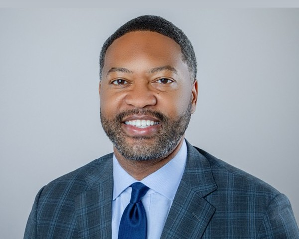
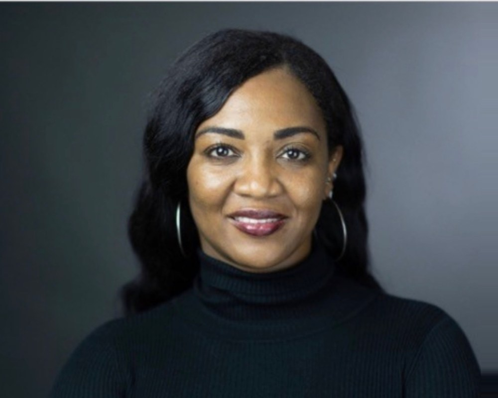

The Firm
Counsel for the Public Interest.
Principal · Public Interest Counsel

Donald Calloway, Jr. — Principal, Public Interest Counsel
Calloway Law is the public interest practice of Donald Calloway, Jr., representing clients in matters involving civil rights, environmental justice, consumer protection, institutional accountability, and other issues of significant public consequence.
Donald Calloway, Jr. is an attorney, business leader, and public servant whose career has been defined by solving complex legal and institutional problems at the intersection of law, business, and government. Over more than two decades, he has represented corporate clients in complex litigation, advised Fortune 500 companies and nonprofit organizations on matters of legal and regulatory significance, served in elected office, and counseled senior public and private sector leaders navigating consequential decisions.
Don is the founder and Chief Executive Officer of Pine Street Advisors, a Washington, D.C. strategic advisory firm that counsels corporations, nonprofit organizations, and institutional leaders on matters involving government, regulation, public affairs, and stakeholder engagement. Before founding Pine Street, he served in executive leadership at a leading global renewable energy company, where he created and led an innovative business unit dedicated to environmental justice, stakeholder value creation, and equitable investment across the energy, agriculture, and commodities sectors.
Earlier in his career, Don led federal congressional and regulatory affairs for Anheuser Busch during the company's historic acquisition of SABMiller, one of the largest corporate mergers ever completed. He also directed the company's public policy and regulatory agenda across ten states, advising on issues involving taxation, manufacturing, labor and employment, regulatory compliance, and government relations.
Don began his legal career in the business litigation practice of Thompson Coburn LLP, where he represented corporate clients in state and federal courts in complex commercial disputes, products liability litigation, and medical malpractice matters. He later served in the Missouri House of Representatives, representing approximately 50,000 residents of St. Louis County. That combination of courtroom advocacy and legislative experience continues to shape his understanding of how laws are made, interpreted, and applied by the institutions they govern.
His commitment to public service extends beyond elected office. In 2018, Don founded the National Voter Protection Action Fund, a national organization dedicated to protecting voting rights and expanding access to the ballot. The organization continues to support voter protection efforts and election policy reforms throughout the United States.
Today, Don advises business leaders, nonprofit organizations, and government officials on matters requiring legal judgment, institutional insight, and strategic counsel. Through Calloway Law, he represents clients in select matters where the legal issues extend beyond individual disputes and implicate broader questions of public accountability, civil rights, environmental justice, and institutional responsibility. He also maintains an active commitment to pro bono representation in matters advancing the public interest.
Don is a graduate of Alabama A&M University, where he served as President of the Student Government Association and is a member of Kappa Alpha Psi Fraternity, Inc. He earned his Juris Doctor from Boston University School of Law.
He is also a frequent legal and public affairs commentator, contributing analysis to national and international media outlets including MSNBC, CNN, and The Washington Post.
Principal · Family Law
Amy N. Alexander — Principal, Family Law
Amy N. Alexander leads the firm's family law practice, counseling clients through divorce, custody, and the domestic matters that shape a family's future.
A native of Florence, Alabama, Mrs. Alexander earned her bachelor's degree in political science from Bennett College in Greensboro, North Carolina, where she served as President of the Political Science Club, Vice President of the Student Government Association, and a Resident Assistant. She was inducted into the Pi Gamma Mu and Bennett Scholars honor societies.
She received her law degree from the University of Alabama School of Law in 2000, where she served as Vice President of the Public Interest Law Society and Editor of the law school newspaper. She has practiced divorce and family law for more than eighteen years.
Expert Witness · Medical Malpractice

Lori A. Calloway, FNP, PMHNP — Expert Witness, Medical Malpractice
Lori A. Calloway, FNP, PMHNP, is an experienced healthcare professional with a strong background in family practice and psychiatric mental health. As a Family Nurse Practitioner and Psychiatric Mental Health Nurse Practitioner, Lori brings a unique clinical perspective, extensive patient-care experience, and a deep understanding of the healthcare system.
Throughout her career, Lori has been committed to providing compassionate, evidence-based care while advocating for the needs, dignity, and well-being of her patients. Her clinical experience has given her valuable insight into complex medical and mental health issues, healthcare standards, patient safety, and the challenges faced by patients and families navigating the healthcare system.
Lori's combination of advanced clinical training and hands-on healthcare experience in critical care, family practice, and mental health allows her to offer informed professional insight in matters involving healthcare corporations, plaintiff cases, mental health, nursing practice, and other healthcare-related issues. She is dedicated to bringing knowledge, professionalism, and integrity to every matter in which she is involved.